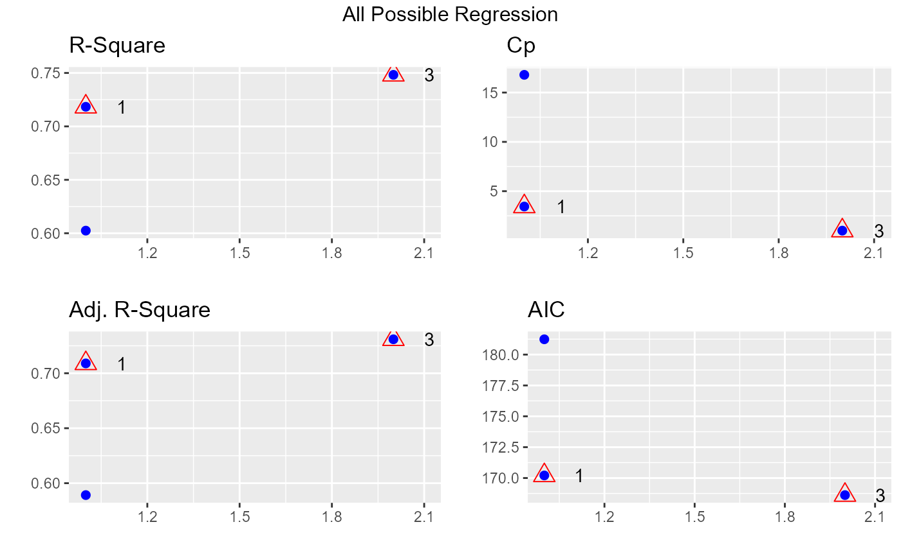

Fits all regressions involving one regressor, two regressors, three regressors, and so on. It tests all possible subsets of the set of potential independent variables.
ols_step_all_possible(model, ...) # S3 method for ols_step_all_possible plot(x, model = NA, print_plot = TRUE, ...)
| model | An object of class |
|---|---|
| ... | Other arguments. |
| x | An object of class |
| print_plot | logical; if |
ols_step_all_possible returns an object of class "ols_step_all_possible".
An object of class "ols_step_all_possible" is a data frame containing the
following components:
model number
predictors in the model
rsquare of the model
adjusted rsquare of the model
predicted rsquare of the model
mallow's Cp
akaike information criteria
sawa bayesian information criteria
schwarz bayes information criteria
estimated MSE of prediction, assuming multivariate normality
final prediction error
amemiya prediction criteria
hocking's Sp
ols_all_subset() has been deprecated. Instead use ols_step_all_possible().
Mendenhall William and Sinsich Terry, 2012, A Second Course in Statistics Regression Analysis (7th edition). Prentice Hall
Other variable selection procedures:
ols_step_backward_aic(),
ols_step_backward_p(),
ols_step_best_subset(),
ols_step_both_aic(),
ols_step_forward_aic(),
ols_step_forward_p()
#> Index N Predictors R-Square Adj. R-Square Mallow's Cp #> 1 1 1 disp 0.7183433 0.7089548 4.443792 #> 2 2 1 hp 0.6024373 0.5891853 17.794906 #> 3 3 2 disp hp 0.7482402 0.7308774 3.000000